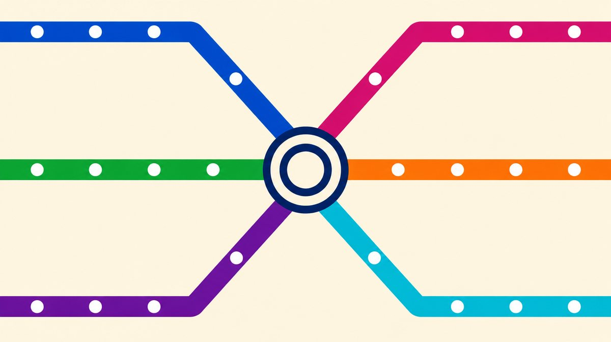
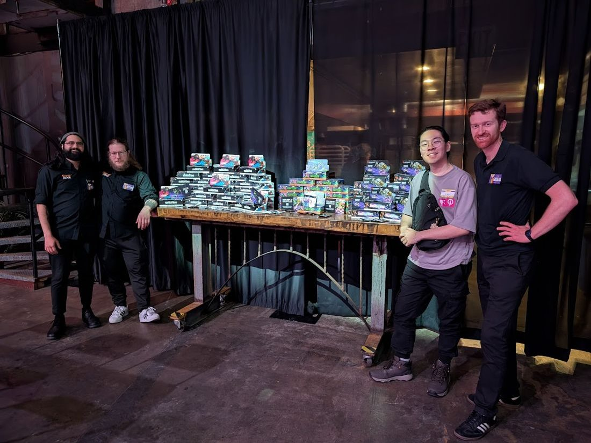

Mission
Champion queer leadership to open doors in games for the underestimated.
About GGP
GGP celebrates excellence and serves people across backgrounds. Our lens as LGBTQ+ professionals and students in games helps us center underestimated talent.

In 2006, LGBTQ+ people working in games started finding each other. Brian Rubin-Sowers and Gordon Bellamy gave that community a name.
It grew into a nonprofit that funds Scholars, gathers the industry at GDC every year and puts working professionals beside the people coming up behind them.
Twenty years on, the home is still here, and the table is bigger.
Champion queer leadership to open doors in games for the underestimated.
A games industry where no one's talent is underestimated because of who they are.
A space that holds, even when the world shifts.
Real people, sourced numbers, serious partners.
Underestimated people doing extraordinary work.
And keep a seat open.
The team as listed in GGP's 2026-27 Vision deck. Photos, pronouns and a board list arrive once each person confirms their listing.

Co-founder
Executive Producer
GGP Scholars
Finance and operations
People and culture advisor
Every number on this site shows where it came from and when.
Totals GGP has calculated are labeled Derived. Nothing is estimated. An annual impact report will live here.
Get involvedThree doors. Pick yours.